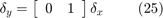

Deriving LPV models from Analytical Jacobian linearization
Contents
Introduction
Consider a nonlinear system:
Where ,  , , and .
, , and .
Assume that and are constant . Then the solution of the nonlinear system is any and , such that if  , then :
, then :
When is a function of time, then the equilibrium  is, in general, not a solution of the nonlinear system:
is, in general, not a solution of the nonlinear system:
We can linearize around even though it is not, in general, a solution of the nonlinear system. Lets define perturbed quantities:

Using Taylor series expansion about , the system dynamics can be expressed as (dropping the notational dependence on time):

where , , and terms represent higher-order terms of the Taylor series approximations, and

Using this Taylor series approximation to linearize the dynamics of the nonlinear system, yields:
Similarly, the Taylor series approximation of can be used to linearize the output equation:
The final LPV model is thus:
Approximations
Standard LPV approach is to neglect higher order terms and , and the term. However, the term can be retained and treated as a measurable disturbance. This can be expressed as , where The higher order terms and are nonlinear functions. They can be handled (locally) as uncertainties using integral quadratic constraints.
An interested reader, can refer to the work by Takarics and Seiler [1] for additional details on this approach. If an analytical linearization is not possible, an LPV model can be constructed using numerical linearization directly from a nonlinear model (e.g. a Simulink model). Refer to section XXX for details.
Example
Consider the nonlinear system (from [2]):
Lets assume that we are given the control objective to make the output track a reference command . We will frame this as a LPV control problem, and derive a LPV model of this nonlinear model for this problem.
Let the desired operating point be scheduled y . In this formulation neither the dynamics ( in Equation (1)), nor the output equation ( in Equation (2)) directly depend on .
The equilibrium point, parameterized by is given by:
Applying the approach described above, the nonlinear system in Equations (18)-(19) is linearized about the parameterized equilibrium point to obtain a LPV system:

By formulating the control problem in the form of a LPV system which described the behaviour of the nonlinear system about a desired reference command, we have recast the problem into a regulation problem: and the control objective is to regulate  in the LPV model.
in the LPV model.
If we neglect the term in the LPV system of Equations (24)-(25), a grid-based LPV model of the system for ![$\rho \in [-5 0 10]$](LPV_fromAnalyticalLinearization_eq15322622910014508070.png) can be constructed using the following commands:
can be constructed using the following commands:
% Define the parameter p = pgrid('p',[-5 0 10]); % Define the system matrices A = [-1 0;1 -2*abs(p)]; B = [1;0]; C = [0 1]; % Define the grid-based LPV model sys = ss(A,B,C,0)
PSS with 2 States, 1 Outputs, 1 Inputs, Continuous System. The PSS consists of the following blocks: p: Gridded real, 3 points in [-5,10], rate bounds [-Inf,Inf].
If we treat the term as a exogenous disturbance to the model then the grid-based LPV system can be modeled as:
Bd = [-2*abs(p);-1]; sys_dis = ss(A,[B Bd],C,0)
PSS with 2 States, 1 Outputs, 2 Inputs, Continuous System. The PSS consists of the following blocks: p: Gridded real, 3 points in [-5,10], rate bounds [-Inf,Inf].
The term in is now an input to the model. It is being treated as an exogenous disturbance, that is independent of . This assumption is, in general, conservative.
References
- B. Takarics and P. Seiler, "Gain Scheduling for Nonlinear Systems via Integral Quadratic Constraints," accepted to the American Control Conference, 2015.
- D. J. Leith and W. E. Leithead, "Counter-Example to a Common LPV Gain-Scheduling Design Approach," UKACC International Control Conference, 2000.